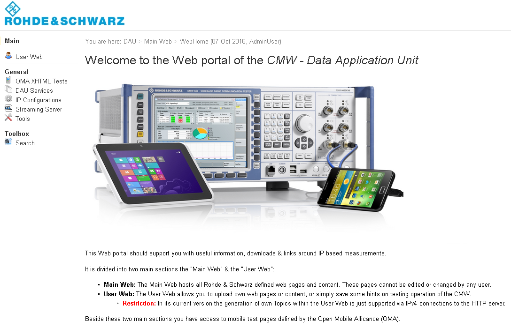

Accessing the Built-In Web Server
The DAU is shipped with a built-in web server which runs a web portal. This portal can be used to test web browsing with the DUT.
The following figure shows the main page of the web portal. The portal is the starting-point for further information, statistics and tools useful for data application testing.

Web portal on the DAU
You can load the web pages using the "IP address" of the DAU shown in the "IP Config" tab. Type it into your web browser: http://<IP_address>, for example, http://172.22.1.201. If you want to use domain names instead of IP addresses, configure and start the DNS server, see "DNS Tab".
The built-in web portal on the DAU is based on a wiki solution. It is divided into two parts:
- "Main Web": This part is predefined by Rohde & Schwarz and provides the following:
– "OMA XHTML Tests": set of XHTML tests specified by the Open Mobile Alliance – "DAU Services": information about DAU services, for example the DNS server – "IP Configurations": examples and tools for configuring IPv6 connections – "Streaming Server": opens the web page of the video streaming server, see "Streaming Videos from the Web Portal". – "Tools": programs which can be installed on the host behind the DUT for data testing
For example, you can download the iperf remote configuration program which is required on the DUT for iperf measurements. See also "Configuring Iperf on the DUT".
The tools are also available on the samba share.– "Toolbox": search function of the wiki - "User Web": This part is empty by default. As usual for a wiki, you can add own web pages to this part and modify them using the built-in editor.
Note: When updating the data testing support package, the "User" pages can be lost. Back up your files before updating the software. All "User" web files are stored on the system drive of the DAU in the directory multimedia/web_server/user/web_pages/, see Figure "DAU samba share in Windows Explorer".